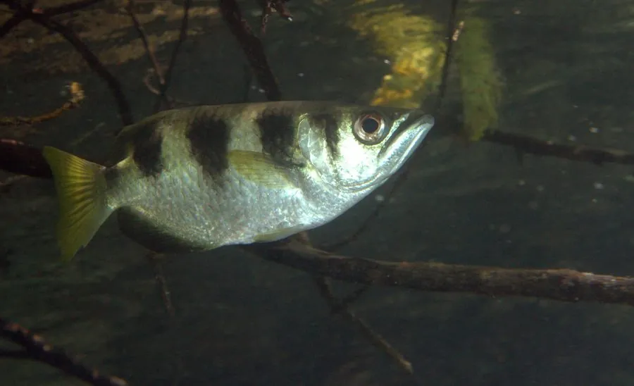

鱼类 · 动物界
射水鱼 Toxotes jaculatrix

栖息于红树林与河口的小型鱼，能用舌头形成“水枪”射出水流击落岸边昆虫，命中率极高，是自然界罕见的“神枪手”。
- 分类
- 门脊索动物门纲硬骨鱼纲目鲈形目科射水鱼科属射水鱼属
- 栖息环境
- 红树林、河口和河岸浅水的咸淡水交界处，常在水面附近活动
- 地理分布
- 印度洋至太平洋热带沿岸，从印度、东南亚到菲律宾、澳大利亚北部
- 保护级别
- 暂无评估
物种志
射水鱼体呈卵圆形、侧扁，体色银白带黄，体侧有几条黑色横带，背鳍和臀鳍位置靠后。它的口上位，下颌延长成管状，口腔顶部有一道凹槽，与舌头配合形成特殊的“水枪”结构。成鱼体长一般 15–25 cm，最大约 30 cm。
射水鱼生活在红树林、河口和河岸浅水的咸淡水交界处，常在水面附近巡游。捕食时，它把舌头抵住口腔上方的凹槽，鳃盖猛然合拢，喷出一股高压水柱击落停在植物枝叶上的昆虫和蜘蛛，射程可达 1–2 m；它还能修正光线折射造成的偏差，命中率很高。繁殖期在河口咸淡水区产卵，卵为浮性，随水流漂流。射水鱼分布于印度洋至太平洋的热带沿岸，从印度、东南亚到菲律宾和澳大利亚北部，是水族市场上常见的观赏鱼，目前没有IUCN 的正式评估。
形态与习性
- 食性捕食水面附近的昆虫、蜘蛛和小型甲壳类
- 体长一般 15–25 cm，最大约 30 cm
- 射程水柱射程可达 1–2 m，能精准击落 2 m 外的昆虫
- 技能靠舌头顶住上颚凹槽、猛合鳃盖形成高压水柱
- 栖息红树林、河口和河岸浅水的咸淡水区
- 繁殖在河口咸淡水区产卵，卵为浮性，随水流漂流
趣味知识
- 射水鱼会计算光线在水面折射造成的偏差，因此能准确击中空中的昆虫。
- 它的水柱可以击落比自身体型更大的猎物，如小蜥蜴和螃蟹。
- 幼鱼一开始只是贴着水面啄食，练习之后才逐渐掌握“射水”技巧。